昆蟲
―― 蝶類 ――
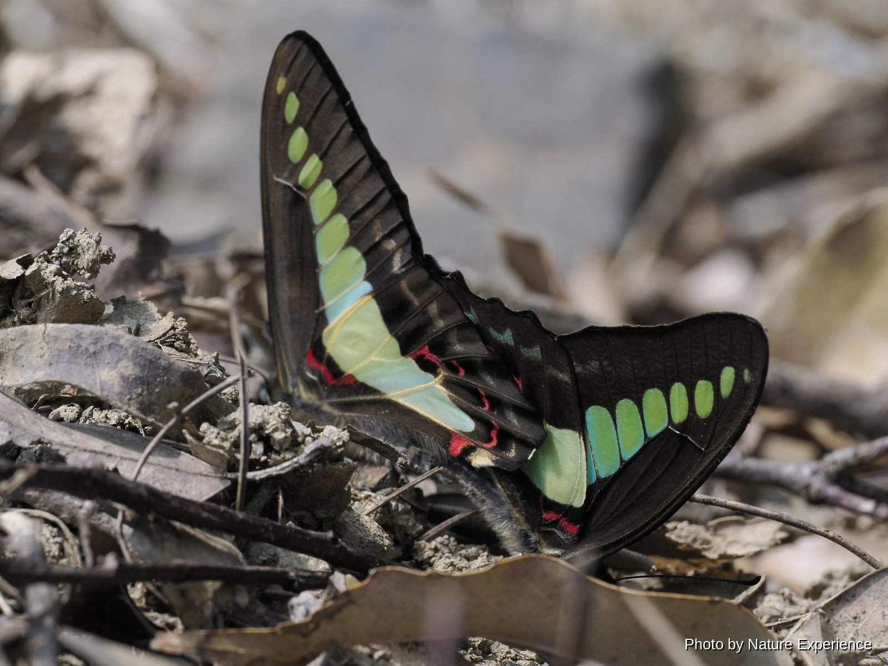
黑色翅膀上有一道貫穿前後翅的青綠色寬帶，飛行迅速，外形美麗。以樟樹、紅楠等樟科植物為食草，在奄美大島全島各地均可見。一年可發生多代，溫暖時節長期可見其身影。
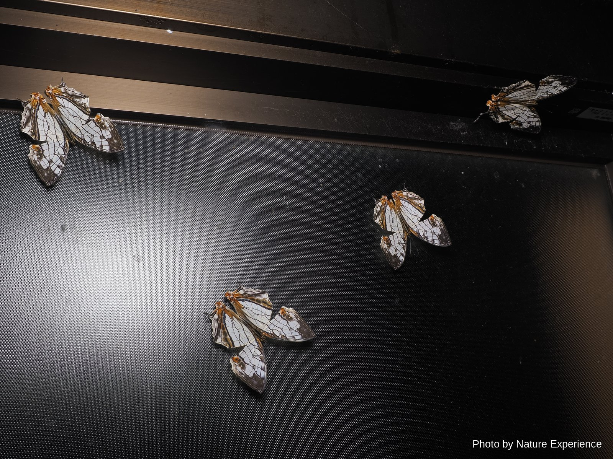
翅膀紋路獨特，白色底色上分布著深褐色的龜甲狀花紋。分布於紀伊半島以西至南西諸島，奄美大島也可見其蹤影。幼蟲以對葉榕、榕樹等桑科植物為食。成蟲可越冬，溫暖時節從春季到深秋反覆繁殖出現。
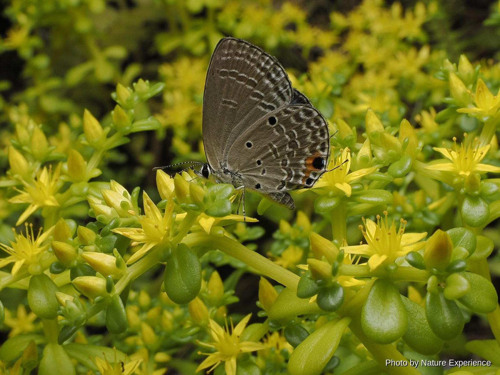
翅膀正面為藍紫色，反面為灰褐色，排列著白色線條和黑色斑點的小型灰蝶。分布於台灣及東南亞等地，在日本自2000年代起擴散至南西諸島，進而擴展到九州和本州。2007年侵入奄美大島並定居下來，由於幼蟲以蘇鐵的嫩葉為食，島內各地的蘇鐵受到了嚴重危害。成蟲在6月至11月前後最為常見。

具有淺藍色斑紋的斑蝶類，飛行姿態輕盈優雅。分布於奄美大島以南，幼蟲以娃兒藤為食草。氣溫降至15度以下的冬日，會有數百隻個體聚集在山谷林間集體越冬，是奄美大島冬季的知名景象。
―― 蜓蜉類 ――
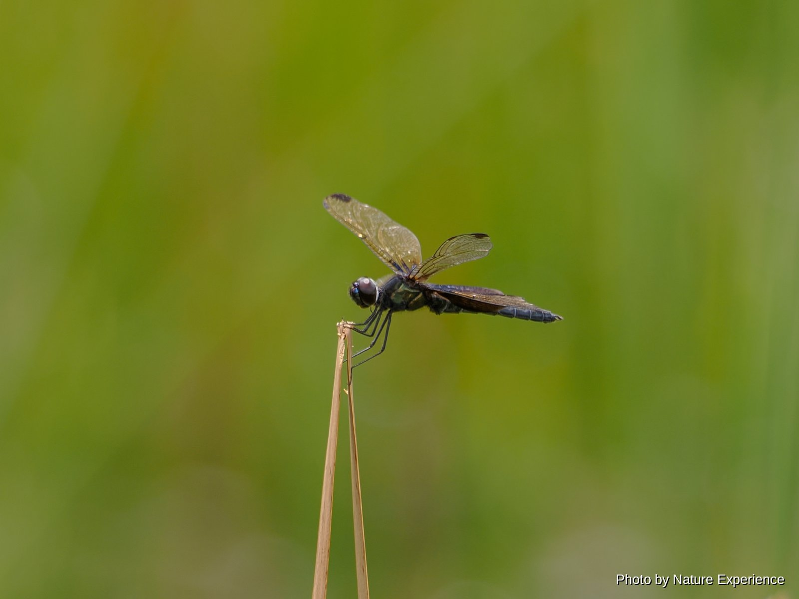
日本國內僅確認分布於奄美大島的稀有蜻蜓。體色黑而帶深綠色光澤，透明的翅膀上有藏青色斑紋。偏好挺水植物茂密的池塘，雄性會在水面附近低飛等待雌性。由於棲息地與個體數量都極為有限，根據《瀕危物種保護法》被指定為國內稀有野生動植物種，禁止捕獲。
禁止採集(《瀕危物種保護法》・國內稀有野生動植物種指定)，環境省紅色名錄 瀕危(EN)
斑麗蜻分布於南西諸島的亞種，從奄美大島到沖繩、宮古、八重山諸島都能廣泛見到。體長約40毫米，翅上深褐色斑紋的大小與形狀因個體而異，差異較大。在池塘與水田周圍振翅飛舞，姿態猶如蝴蝶一般。
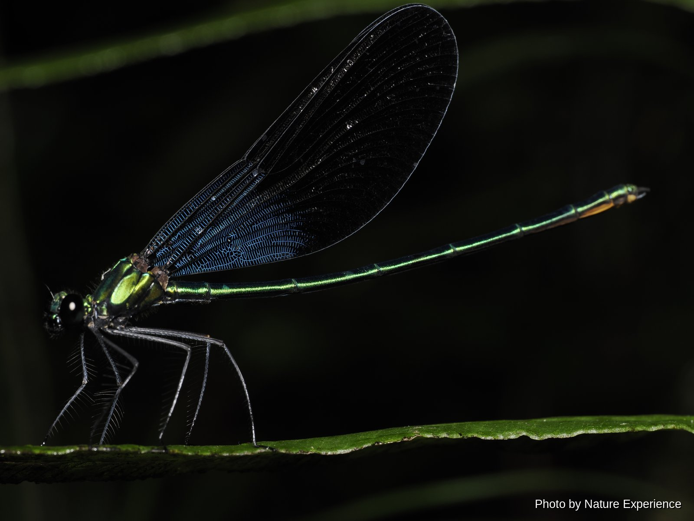
體長約65毫米。分布於奄美大島、德之島及沖繩島，棲息在被森林環繞的昏暗山地溪流的上游至中游。身體帶有青綠色金屬光澤，黑色的翅膀隨光線變化會閃出藍色光芒。奄美大島的個體比沖繩島的個體翅膀上閃藍光的部分更寬。成蟲從2月下旬到12月前後，在很長一段時間內都能見到。
―― 蟀蟀・螺斯的仿間(直翅目) ――
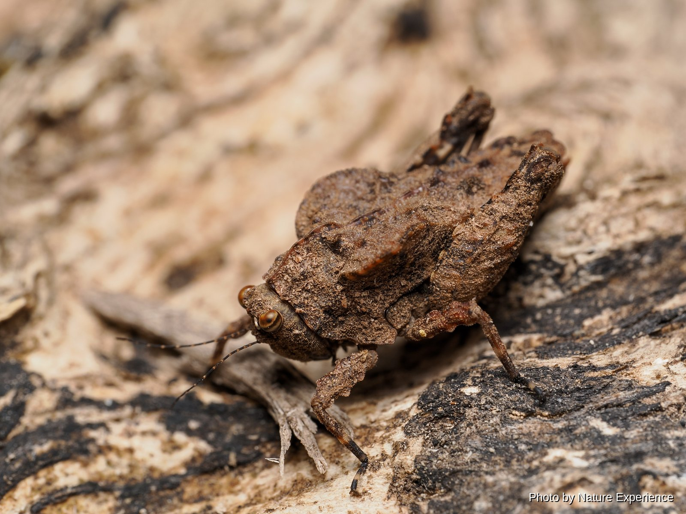
分布於奄美大島、德之島的日本固有種。體長雄性約10毫米，雌性約14.5毫米。前胸背板扁平寬展為其特徵，棲息於堆積落葉的林地地面，具有融入周圍環境的保護色。行動敏捷，受驚時會跳躍逃走。
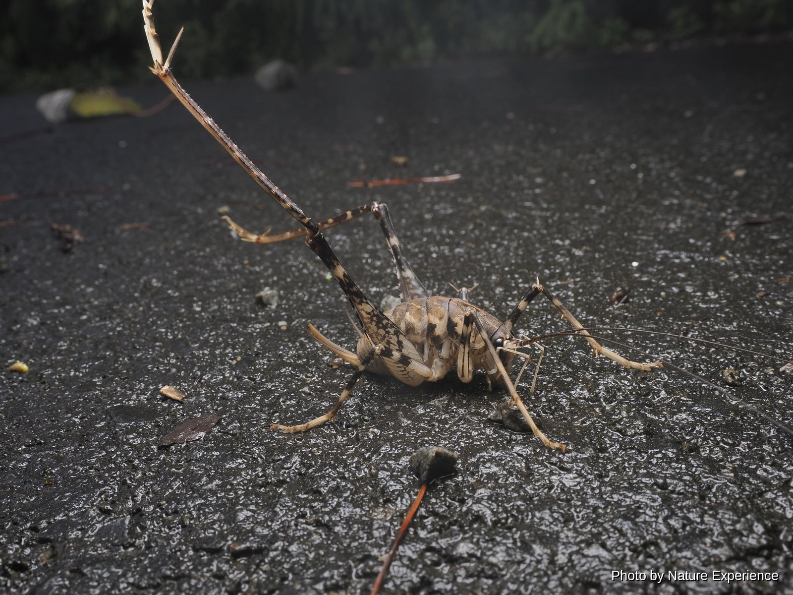
棲息於奄美大島和德之島的斑灶馬類。比日本本土的斑灶馬(體長20〜34毫米)更大，身上的斑駁花紋不太清晰。沒有翅膀，擁有長長的觸角和發達的後足。與其說是四處爬行，不如說多以小幅跳躍的方式移動。夜晚可在森林中見到，成蟲在夏季至秋季出現。
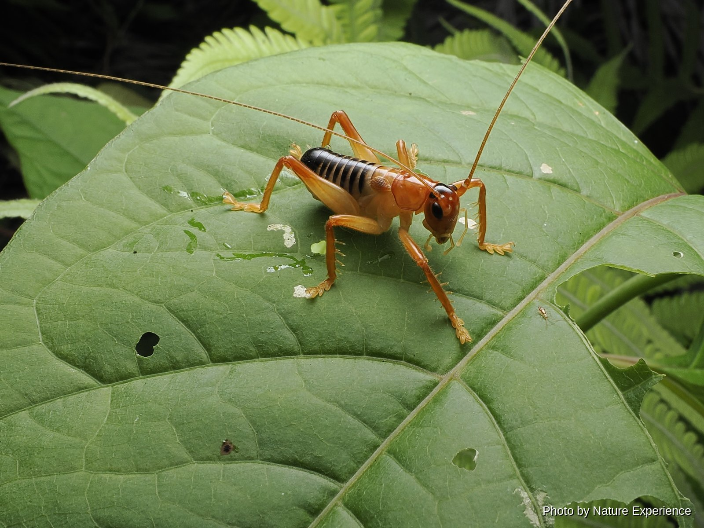
雄性體長12〜24毫米，雌性17〜27毫米。正如其名，翅膀非常小且不顯眼，是中型的蟋螽類。分布於靜岡縣以西的溫暖地區直至南西諸島。身體呈帶橙色調的褐色。白天躲在用口中吐出的絲綴合樹葉做成的巢中，夜晚出來捕食其他昆蟲等。
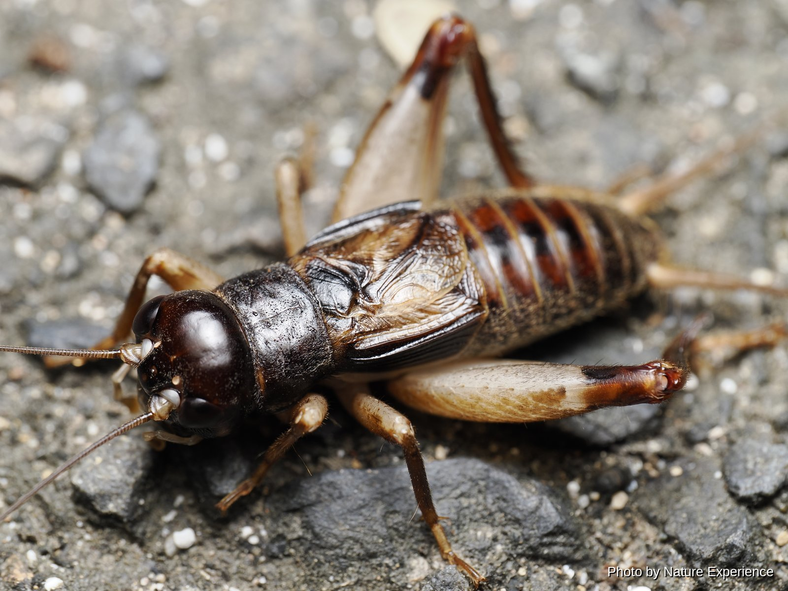
體長31〜35毫米，體型偏大，外形近似蟋蟀。廣泛分布於奄美大島、德之島等南西諸島，如其名所示，棲息於朽木樹皮下等隱蔽處。夜間會發出"咕依——咕依——"的特有鳴聲。在溫暖地區，無論季節，全年皆可見成蟲身影。
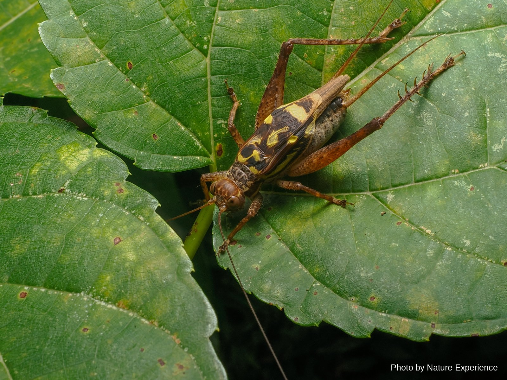
名字雖帶"蟋蟀"二字，但分類上屬於樹蟋類。棲息於吐噶喇列島以南南西諸島的森林中，在奄美群島約從8月下旬開始出現成蟲。常不分晝夜地群集於樹幹上，發出"嘶、嘶"的鳴聲。個體數量眾多，也是爬行類與鳥類的重要食物來源。
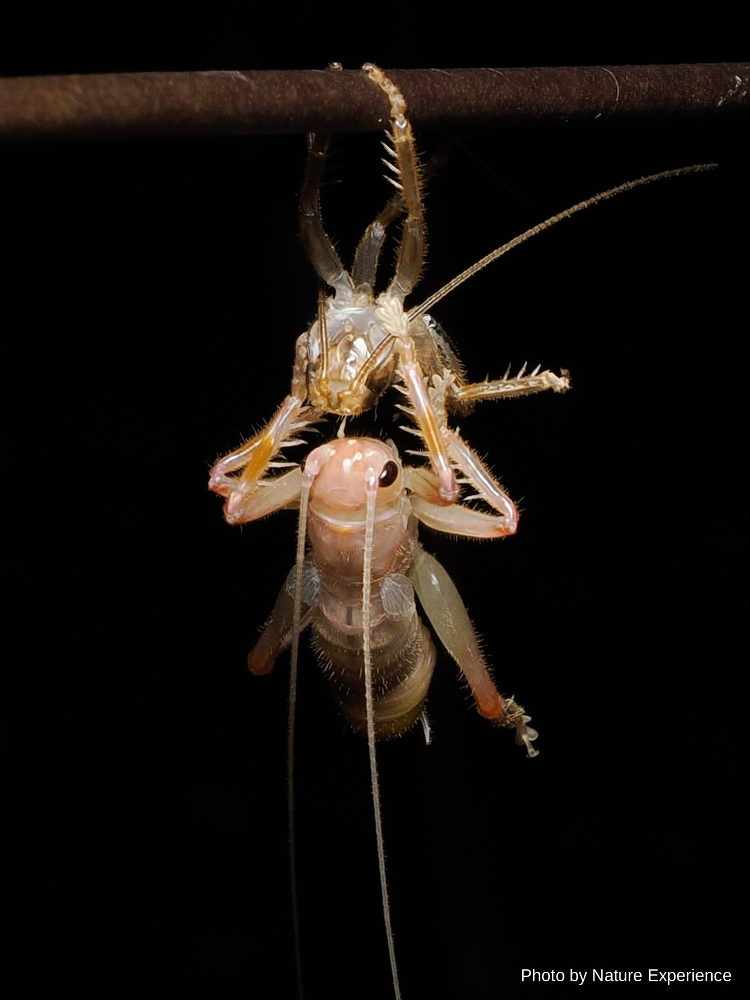
分布於寶島、奄美大島、加計呂麻島的樹棲性樹蟋螽類。觸角遠長於體長。白天躲藏在自己吐絲綴合樹葉做成的巢中，夜晚才爬出活動，屬夜行性昆蟲。肉食性強，捕食其他昆蟲。警戒心強，很難被發現。

分布於伊豆半島以南溫暖地區的螽斯類，奄美大島及南西諸島其他地區也可見到。從夏末開始鳴叫，隨著秋意漸濃，會發出"咕嚕嚕嚕嚕"般響亮嘈雜的鳴聲。剛開始鳴叫時是"咕——、咕——"般間隔的聲音，隨後逐漸變為不間斷的連續音。